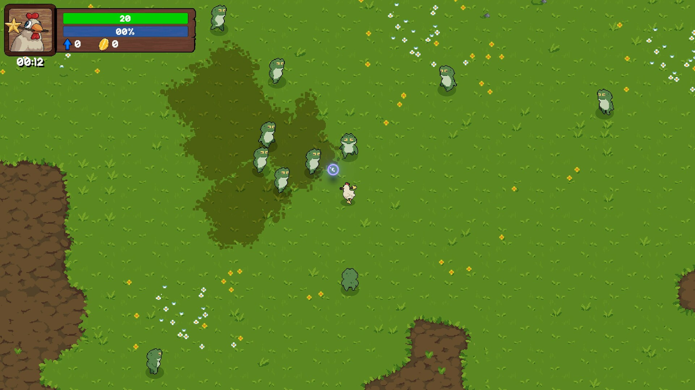
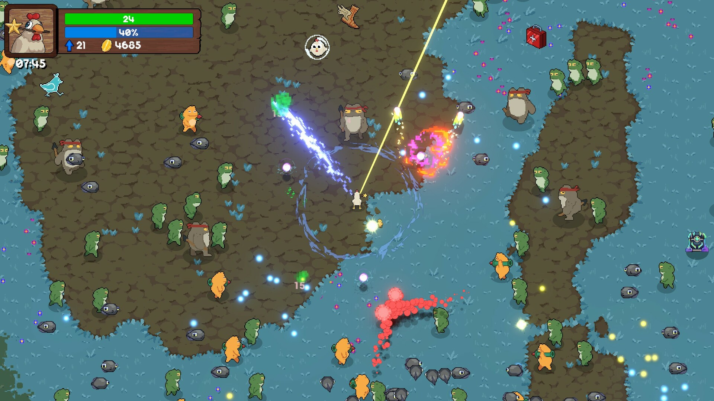
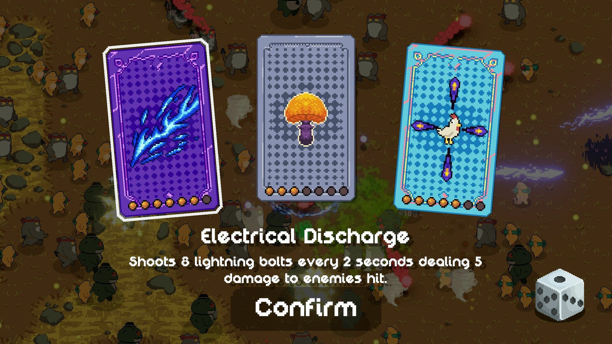
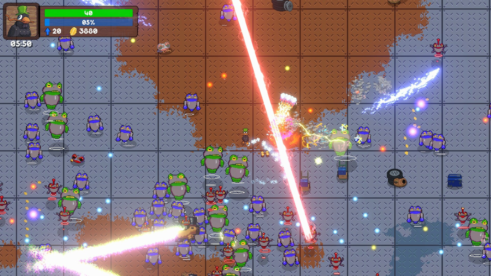
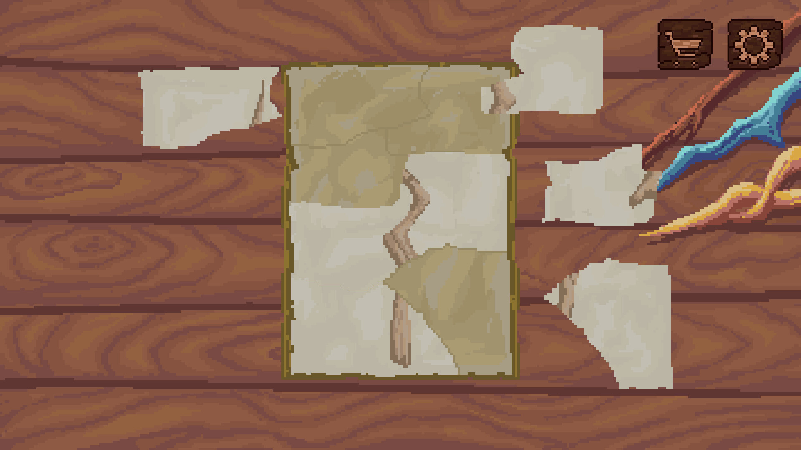
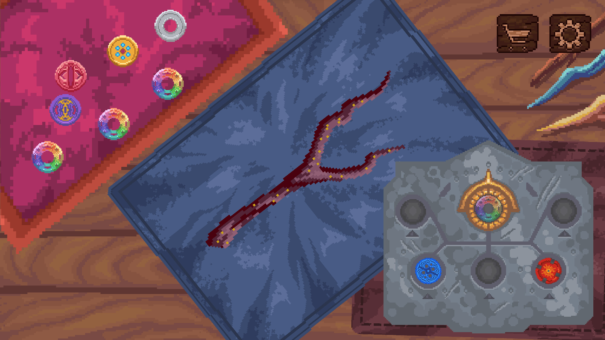

Derrote um exército fortemente armado de sapos anti-magia e liberte a floresta da destruição. Machick é um jogo Vampire Survivors-like, roguelite onde você constrói suas próprias varinhas, sobrevive a hordas de inimigos, coleta XP e seleciona aprimoramentos para ir cada vez mais longe na jornada.
Este foi um marco imenso na minha carreira por ser o meu primeiro jogo comercial lançado. Trabalhando em uma equipe indie dedicada, tive a oportunidade única de participar ativamente de todo o ciclo de vida do projeto: desde as reuniões iniciais de brainstorm e concepção da ideia, passando por todo o desenvolvimento pesado, até o suporte e envio de correções (patches) no pós-lançamento. Essa vivência ponta a ponta expandiu incrivelmente minha visão tanto técnica quanto de produto.